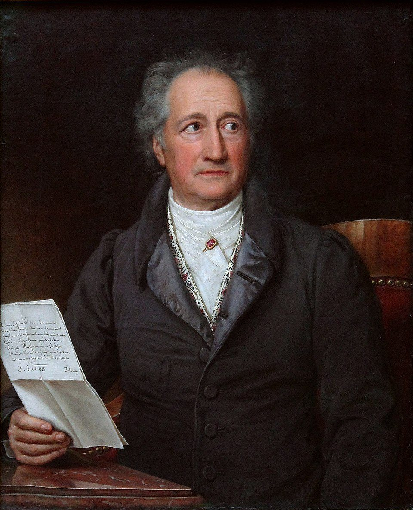
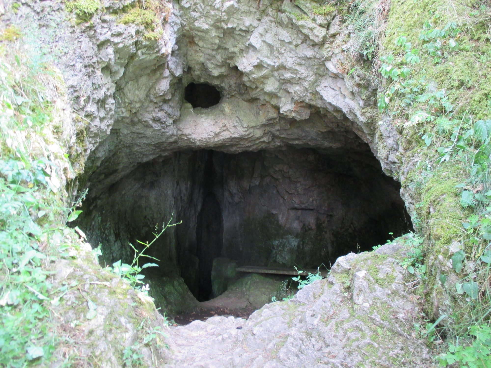
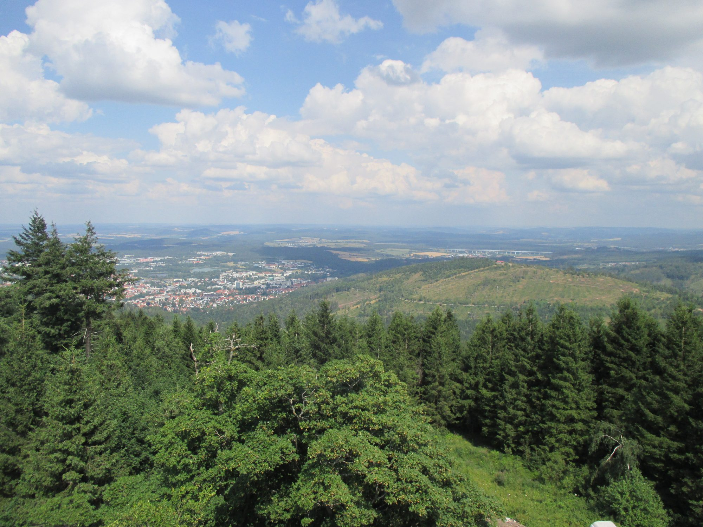

15.07. / Thueringer Wald
Auf Goethes Spuren
Waldwege, weite Ausblicke und literarische Spuren im Thüringer Wald.
.jpeg)
Zusammenfassung
Wandern, Wald und Goethe
Eintrag folgt.

Dichter · Forscher · Staatsmann
Johann Wolfgang von Goethe
1749, Frankfurt am Main — 1832, Weimar
Goethe war Dichter und Dramatiker, wie auch Naturforscher und politischer Beamter — ein Mensch, der die Welt nicht in einzelne Fächer zerlegte, sondern auf der Suche nach einem Gesamtbild war. Mit Werken wie Die Leiden des jungen Werthers, Wilhelm Meisters Lehrjahre und vor allem Faust prägte er die deutsche Literatur; gemeinsam mit Schiller wurde er zur zentralen Gestalt und Mitbegründer der Weimarer Klassik.
Goethe und Ilmenau
Ilmenau war für Goethe Amtspflicht und Rückzugsort zugleich. Ab 1776 kam er im Auftrag des Weimarer Hofes immer wieder hierher. Als Leiter der Bergwerkskommission setzte er sich für die Wiederbelebung des Kupfer- und Silberbergbaus ein; zugleich fand er in Wald, Fels und Stille Raum für naturwissenschaftliche Beobachtungen, Zeichnungen und Gedichte. Am 6. September 1780 schrieb er auf dem Kickelhahn die Verse von Ein Gleiches an die Wand einer Jagdhütte. Insgesamt verbrachte er dort 220 Tage seines Lebens.
Nach: Wikipedia, Goethes Ilmenau und GoetheStadtMuseum Ilmenau.
Auf dem Kickelhahn · 1780
Ein Gleiches
Johann Wolfgang von Goethe
Über allen Gipfeln
Ist Ruh’,
In allen Wipfeln
Spürest du
Kaum einen Hauch;
Die Vögelein schweigen im Walde.
Warte nur, balde
Ruhest du auch.
Bilder
Erste Eindrücke

.jpeg)
Wandermomente
Auf Goethes Spuren
Unterwegs
Waldwege, Felsen und sommerliche Wiesen im Thüringer Wald.
Weitblick
Ausblicke über Berge, Täler und die Orte am Horizont.
Goethe
Literarische Spuren und kleine Entdeckungen entlang der Route.
Chronologie
Die Wanderung in Bildern
Ein paar Impressionen...
.jpeg)


.jpeg)
.jpeg)


.jpeg)
.jpeg)
Notizen
Weitere Texte
Eintrag folgt.